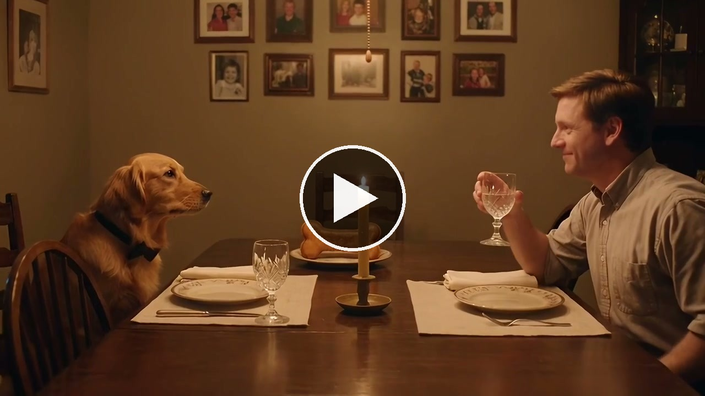
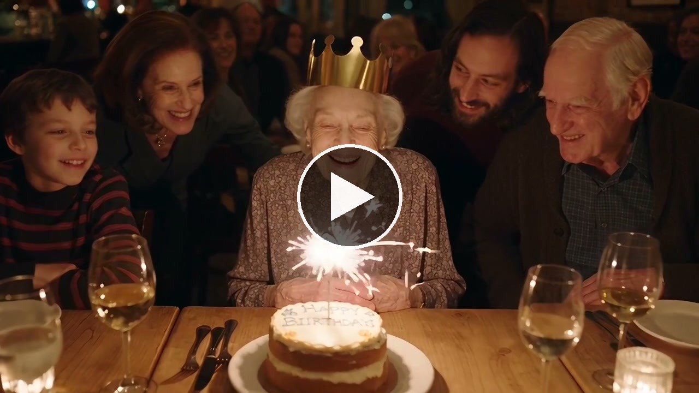
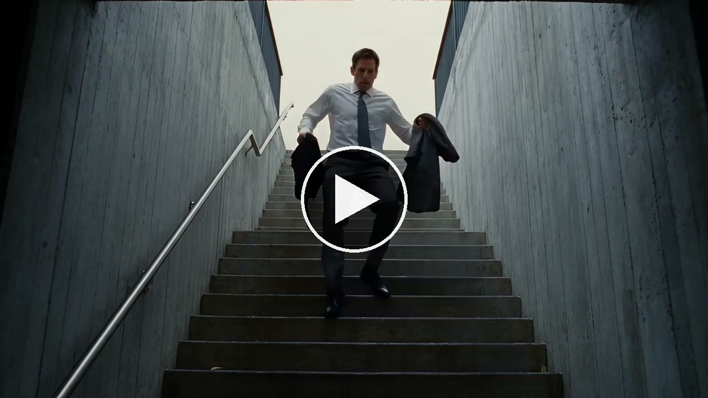
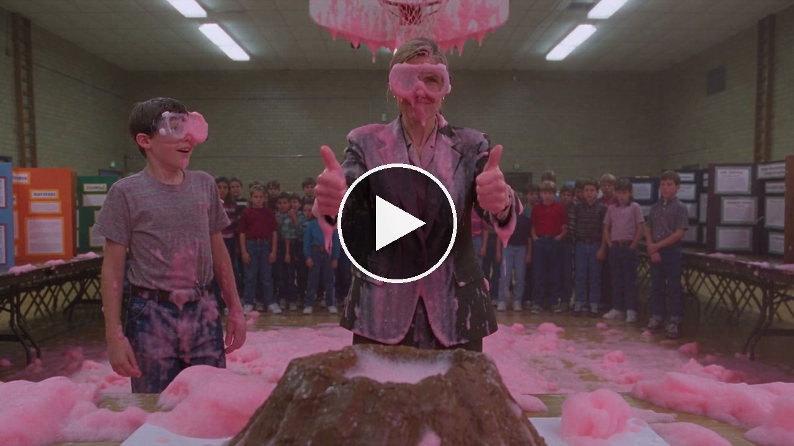

Seven short films, each made from a single AI generation, one for every day of the Learn AI Filmmaking series. Every film here is one take from one prompt, with native sound and no editing, and every prompt is published in full.



